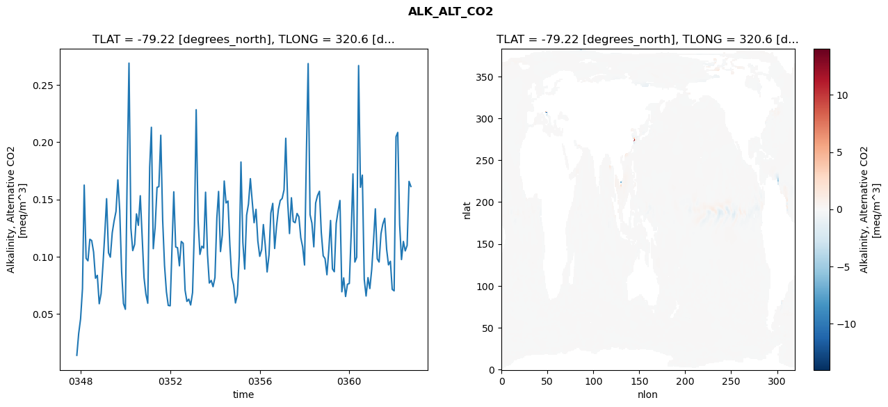
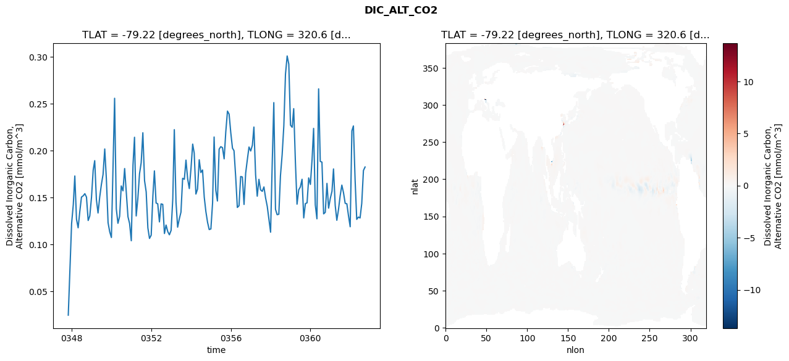
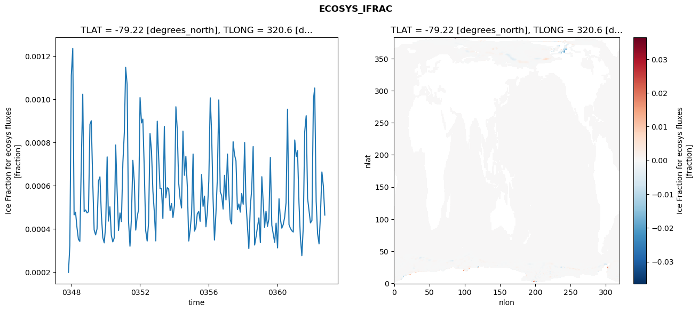
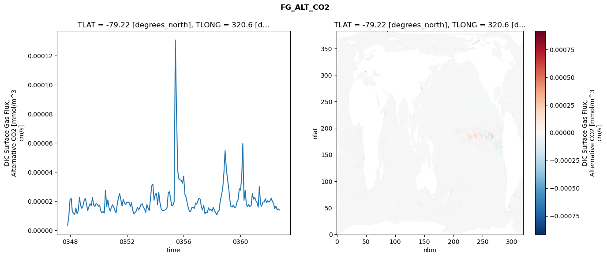

glb-dor_North_Atlantic_basin_034_1999-10-01_00139#
Simulation details#
Case: smyle.cdr-atlas-v0.glb-dor_North_Atlantic_basin_034_1999-10-01_00139.001
Basin: North_Atlantic_basin
Polygon: 34.0
Start date: 1999-10
Show code cell source Hide code cell source
import xarray as xr
import matplotlib.pyplot as plt
Show code cell source Hide code cell source
zarr_store = "/path/to/zarr/store"
# Parameters
zarr_store = "/global/cfs/projectdirs/m4746/Projects/Ocean-CDR-Atlas-v0/data/validation/smyle.cdr-atlas-v0.glb-dor_North_Atlantic_basin_034_1999-10-01_00139.001.validation.zarr"
Show code cell source Hide code cell source
%%time
ds_o = xr.open_zarr(zarr_store).compute()
ds_o
CPU times: user 607 ms, sys: 472 ms, total: 1.08 s
Wall time: 1.48 s
<xarray.Dataset> Size: 2MB
Dimensions: (nlat: 384, nlon: 320, time: 180)
Coordinates:
TLAT float64 8B -79.22
TLONG float64 8B 320.6
ULAT float64 8B -78.95
ULONG float64 8B 321.1
* time (time) object 1kB 0347-11-01 00:00:00 ... 0362-10-01 0...
z_t float32 4B 500.0
Dimensions without coordinates: nlat, nlon
Data variables:
ALK_ALT_CO2_diff (nlat, nlon) float32 492kB nan nan nan ... nan nan nan
ALK_ALT_CO2_rmse (time) float64 1kB 0.01368 0.0327 ... 0.1658 0.1613
DIC_ALT_CO2_diff (nlat, nlon) float32 492kB nan nan nan ... nan nan nan
DIC_ALT_CO2_rmse (time) float64 1kB 0.02445 0.07294 ... 0.1786 0.1824
ECOSYS_IFRAC_diff (nlat, nlon) float32 492kB nan nan nan ... nan nan nan
ECOSYS_IFRAC_rmse (time) float64 1kB 0.0001979 0.0003228 ... 0.0004631
FG_ALT_CO2_diff (nlat, nlon) float32 492kB nan nan nan ... nan nan nan
FG_ALT_CO2_rmse (time) float64 1kB 3.501e-06 9.368e-06 ... 1.403e-05xarray.Dataset
- nlat: 384
- nlon: 320
- time: 180
- TLAT()float64-79.22
- long_name :
- array of t-grid latitudes
- units :
- degrees_north
array(-79.22052261)
- TLONG()float64320.6
- long_name :
- array of t-grid longitudes
- units :
- degrees_east
array(320.56250892)
- ULAT()float64-78.95
- long_name :
- array of u-grid latitudes
- units :
- degrees_north
array(-78.95289509)
- ULONG()float64321.1
- long_name :
- array of u-grid longitudes
- units :
- degrees_east
array(321.12500894)
- time(time)object0347-11-01 00:00:00 ... 0362-10-...
- bounds :
- time_bound
- long_name :
- time
array([cftime.DatetimeNoLeap(347, 11, 1, 0, 0, 0, 0, has_year_zero=True), cftime.DatetimeNoLeap(347, 12, 1, 0, 0, 0, 0, has_year_zero=True), cftime.DatetimeNoLeap(348, 1, 1, 0, 0, 0, 0, has_year_zero=True), cftime.DatetimeNoLeap(348, 2, 1, 0, 0, 0, 0, has_year_zero=True), cftime.DatetimeNoLeap(348, 3, 1, 0, 0, 0, 0, has_year_zero=True), cftime.DatetimeNoLeap(348, 4, 1, 0, 0, 0, 0, has_year_zero=True), cftime.DatetimeNoLeap(348, 5, 1, 0, 0, 0, 0, has_year_zero=True), cftime.DatetimeNoLeap(348, 6, 1, 0, 0, 0, 0, has_year_zero=True), cftime.DatetimeNoLeap(348, 7, 1, 0, 0, 0, 0, has_year_zero=True), cftime.DatetimeNoLeap(348, 8, 1, 0, 0, 0, 0, has_year_zero=True), cftime.DatetimeNoLeap(348, 9, 1, 0, 0, 0, 0, has_year_zero=True), cftime.DatetimeNoLeap(348, 10, 1, 0, 0, 0, 0, has_year_zero=True), cftime.DatetimeNoLeap(348, 11, 1, 0, 0, 0, 0, has_year_zero=True), cftime.DatetimeNoLeap(348, 12, 1, 0, 0, 0, 0, has_year_zero=True), cftime.DatetimeNoLeap(349, 1, 1, 0, 0, 0, 0, has_year_zero=True), cftime.DatetimeNoLeap(349, 2, 1, 0, 0, 0, 0, has_year_zero=True), cftime.DatetimeNoLeap(349, 3, 1, 0, 0, 0, 0, has_year_zero=True), cftime.DatetimeNoLeap(349, 4, 1, 0, 0, 0, 0, has_year_zero=True), cftime.DatetimeNoLeap(349, 5, 1, 0, 0, 0, 0, has_year_zero=True), cftime.DatetimeNoLeap(349, 6, 1, 0, 0, 0, 0, has_year_zero=True), cftime.DatetimeNoLeap(349, 7, 1, 0, 0, 0, 0, has_year_zero=True), cftime.DatetimeNoLeap(349, 8, 1, 0, 0, 0, 0, has_year_zero=True), cftime.DatetimeNoLeap(349, 9, 1, 0, 0, 0, 0, has_year_zero=True), cftime.DatetimeNoLeap(349, 10, 1, 0, 0, 0, 0, has_year_zero=True), cftime.DatetimeNoLeap(349, 11, 1, 0, 0, 0, 0, has_year_zero=True), cftime.DatetimeNoLeap(349, 12, 1, 0, 0, 0, 0, has_year_zero=True), cftime.DatetimeNoLeap(350, 1, 1, 0, 0, 0, 0, has_year_zero=True), cftime.DatetimeNoLeap(350, 2, 1, 0, 0, 0, 0, has_year_zero=True), cftime.DatetimeNoLeap(350, 3, 1, 0, 0, 0, 0, has_year_zero=True), cftime.DatetimeNoLeap(350, 4, 1, 0, 0, 0, 0, has_year_zero=True), cftime.DatetimeNoLeap(350, 5, 1, 0, 0, 0, 0, has_year_zero=True), cftime.DatetimeNoLeap(350, 6, 1, 0, 0, 0, 0, has_year_zero=True), cftime.DatetimeNoLeap(350, 7, 1, 0, 0, 0, 0, has_year_zero=True), cftime.DatetimeNoLeap(350, 8, 1, 0, 0, 0, 0, has_year_zero=True), cftime.DatetimeNoLeap(350, 9, 1, 0, 0, 0, 0, has_year_zero=True), cftime.DatetimeNoLeap(350, 10, 1, 0, 0, 0, 0, has_year_zero=True), cftime.DatetimeNoLeap(350, 11, 1, 0, 0, 0, 0, has_year_zero=True), cftime.DatetimeNoLeap(350, 12, 1, 0, 0, 0, 0, has_year_zero=True), cftime.DatetimeNoLeap(351, 1, 1, 0, 0, 0, 0, has_year_zero=True), cftime.DatetimeNoLeap(351, 2, 1, 0, 0, 0, 0, has_year_zero=True), cftime.DatetimeNoLeap(351, 3, 1, 0, 0, 0, 0, has_year_zero=True), cftime.DatetimeNoLeap(351, 4, 1, 0, 0, 0, 0, has_year_zero=True), cftime.DatetimeNoLeap(351, 5, 1, 0, 0, 0, 0, has_year_zero=True), cftime.DatetimeNoLeap(351, 6, 1, 0, 0, 0, 0, has_year_zero=True), cftime.DatetimeNoLeap(351, 7, 1, 0, 0, 0, 0, has_year_zero=True), cftime.DatetimeNoLeap(351, 8, 1, 0, 0, 0, 0, has_year_zero=True), cftime.DatetimeNoLeap(351, 9, 1, 0, 0, 0, 0, has_year_zero=True), cftime.DatetimeNoLeap(351, 10, 1, 0, 0, 0, 0, has_year_zero=True), cftime.DatetimeNoLeap(351, 11, 1, 0, 0, 0, 0, has_year_zero=True), cftime.DatetimeNoLeap(351, 12, 1, 0, 0, 0, 0, has_year_zero=True), cftime.DatetimeNoLeap(352, 1, 1, 0, 0, 0, 0, has_year_zero=True), cftime.DatetimeNoLeap(352, 2, 1, 0, 0, 0, 0, has_year_zero=True), cftime.DatetimeNoLeap(352, 3, 1, 0, 0, 0, 0, has_year_zero=True), cftime.DatetimeNoLeap(352, 4, 1, 0, 0, 0, 0, has_year_zero=True), cftime.DatetimeNoLeap(352, 5, 1, 0, 0, 0, 0, has_year_zero=True), cftime.DatetimeNoLeap(352, 6, 1, 0, 0, 0, 0, has_year_zero=True), cftime.DatetimeNoLeap(352, 7, 1, 0, 0, 0, 0, has_year_zero=True), cftime.DatetimeNoLeap(352, 8, 1, 0, 0, 0, 0, has_year_zero=True), cftime.DatetimeNoLeap(352, 9, 1, 0, 0, 0, 0, has_year_zero=True), cftime.DatetimeNoLeap(352, 10, 1, 0, 0, 0, 0, has_year_zero=True), cftime.DatetimeNoLeap(352, 11, 1, 0, 0, 0, 0, has_year_zero=True), cftime.DatetimeNoLeap(352, 12, 1, 0, 0, 0, 0, has_year_zero=True), cftime.DatetimeNoLeap(353, 1, 1, 0, 0, 0, 0, has_year_zero=True), cftime.DatetimeNoLeap(353, 2, 1, 0, 0, 0, 0, has_year_zero=True), cftime.DatetimeNoLeap(353, 3, 1, 0, 0, 0, 0, has_year_zero=True), cftime.DatetimeNoLeap(353, 4, 1, 0, 0, 0, 0, has_year_zero=True), cftime.DatetimeNoLeap(353, 5, 1, 0, 0, 0, 0, has_year_zero=True), cftime.DatetimeNoLeap(353, 6, 1, 0, 0, 0, 0, has_year_zero=True), cftime.DatetimeNoLeap(353, 7, 1, 0, 0, 0, 0, has_year_zero=True), cftime.DatetimeNoLeap(353, 8, 1, 0, 0, 0, 0, has_year_zero=True), cftime.DatetimeNoLeap(353, 9, 1, 0, 0, 0, 0, has_year_zero=True), cftime.DatetimeNoLeap(353, 10, 1, 0, 0, 0, 0, has_year_zero=True), cftime.DatetimeNoLeap(353, 11, 1, 0, 0, 0, 0, has_year_zero=True), cftime.DatetimeNoLeap(353, 12, 1, 0, 0, 0, 0, has_year_zero=True), cftime.DatetimeNoLeap(354, 1, 1, 0, 0, 0, 0, has_year_zero=True), cftime.DatetimeNoLeap(354, 2, 1, 0, 0, 0, 0, has_year_zero=True), cftime.DatetimeNoLeap(354, 3, 1, 0, 0, 0, 0, has_year_zero=True), cftime.DatetimeNoLeap(354, 4, 1, 0, 0, 0, 0, has_year_zero=True), cftime.DatetimeNoLeap(354, 5, 1, 0, 0, 0, 0, has_year_zero=True), cftime.DatetimeNoLeap(354, 6, 1, 0, 0, 0, 0, has_year_zero=True), cftime.DatetimeNoLeap(354, 7, 1, 0, 0, 0, 0, has_year_zero=True), cftime.DatetimeNoLeap(354, 8, 1, 0, 0, 0, 0, has_year_zero=True), cftime.DatetimeNoLeap(354, 9, 1, 0, 0, 0, 0, has_year_zero=True), cftime.DatetimeNoLeap(354, 10, 1, 0, 0, 0, 0, has_year_zero=True), cftime.DatetimeNoLeap(354, 11, 1, 0, 0, 0, 0, has_year_zero=True), cftime.DatetimeNoLeap(354, 12, 1, 0, 0, 0, 0, has_year_zero=True), cftime.DatetimeNoLeap(355, 1, 1, 0, 0, 0, 0, has_year_zero=True), cftime.DatetimeNoLeap(355, 2, 1, 0, 0, 0, 0, has_year_zero=True), cftime.DatetimeNoLeap(355, 3, 1, 0, 0, 0, 0, has_year_zero=True), cftime.DatetimeNoLeap(355, 4, 1, 0, 0, 0, 0, has_year_zero=True), cftime.DatetimeNoLeap(355, 5, 1, 0, 0, 0, 0, has_year_zero=True), cftime.DatetimeNoLeap(355, 6, 1, 0, 0, 0, 0, has_year_zero=True), cftime.DatetimeNoLeap(355, 7, 1, 0, 0, 0, 0, has_year_zero=True), cftime.DatetimeNoLeap(355, 8, 1, 0, 0, 0, 0, has_year_zero=True), cftime.DatetimeNoLeap(355, 9, 1, 0, 0, 0, 0, has_year_zero=True), cftime.DatetimeNoLeap(355, 10, 1, 0, 0, 0, 0, has_year_zero=True), cftime.DatetimeNoLeap(355, 11, 1, 0, 0, 0, 0, has_year_zero=True), cftime.DatetimeNoLeap(355, 12, 1, 0, 0, 0, 0, has_year_zero=True), cftime.DatetimeNoLeap(356, 1, 1, 0, 0, 0, 0, has_year_zero=True), cftime.DatetimeNoLeap(356, 2, 1, 0, 0, 0, 0, has_year_zero=True), cftime.DatetimeNoLeap(356, 3, 1, 0, 0, 0, 0, has_year_zero=True), cftime.DatetimeNoLeap(356, 4, 1, 0, 0, 0, 0, has_year_zero=True), cftime.DatetimeNoLeap(356, 5, 1, 0, 0, 0, 0, has_year_zero=True), cftime.DatetimeNoLeap(356, 6, 1, 0, 0, 0, 0, has_year_zero=True), cftime.DatetimeNoLeap(356, 7, 1, 0, 0, 0, 0, has_year_zero=True), cftime.DatetimeNoLeap(356, 8, 1, 0, 0, 0, 0, has_year_zero=True), cftime.DatetimeNoLeap(356, 9, 1, 0, 0, 0, 0, has_year_zero=True), cftime.DatetimeNoLeap(356, 10, 1, 0, 0, 0, 0, has_year_zero=True), cftime.DatetimeNoLeap(356, 11, 1, 0, 0, 0, 0, has_year_zero=True), cftime.DatetimeNoLeap(356, 12, 1, 0, 0, 0, 0, has_year_zero=True), cftime.DatetimeNoLeap(357, 1, 1, 0, 0, 0, 0, has_year_zero=True), cftime.DatetimeNoLeap(357, 2, 1, 0, 0, 0, 0, has_year_zero=True), cftime.DatetimeNoLeap(357, 3, 1, 0, 0, 0, 0, has_year_zero=True), cftime.DatetimeNoLeap(357, 4, 1, 0, 0, 0, 0, has_year_zero=True), cftime.DatetimeNoLeap(357, 5, 1, 0, 0, 0, 0, has_year_zero=True), cftime.DatetimeNoLeap(357, 6, 1, 0, 0, 0, 0, has_year_zero=True), cftime.DatetimeNoLeap(357, 7, 1, 0, 0, 0, 0, has_year_zero=True), cftime.DatetimeNoLeap(357, 8, 1, 0, 0, 0, 0, has_year_zero=True), cftime.DatetimeNoLeap(357, 9, 1, 0, 0, 0, 0, has_year_zero=True), cftime.DatetimeNoLeap(357, 10, 1, 0, 0, 0, 0, has_year_zero=True), cftime.DatetimeNoLeap(357, 11, 1, 0, 0, 0, 0, has_year_zero=True), cftime.DatetimeNoLeap(357, 12, 1, 0, 0, 0, 0, has_year_zero=True), cftime.DatetimeNoLeap(358, 1, 1, 0, 0, 0, 0, has_year_zero=True), cftime.DatetimeNoLeap(358, 2, 1, 0, 0, 0, 0, has_year_zero=True), cftime.DatetimeNoLeap(358, 3, 1, 0, 0, 0, 0, has_year_zero=True), cftime.DatetimeNoLeap(358, 4, 1, 0, 0, 0, 0, has_year_zero=True), cftime.DatetimeNoLeap(358, 5, 1, 0, 0, 0, 0, has_year_zero=True), cftime.DatetimeNoLeap(358, 6, 1, 0, 0, 0, 0, has_year_zero=True), cftime.DatetimeNoLeap(358, 7, 1, 0, 0, 0, 0, has_year_zero=True), cftime.DatetimeNoLeap(358, 8, 1, 0, 0, 0, 0, has_year_zero=True), cftime.DatetimeNoLeap(358, 9, 1, 0, 0, 0, 0, has_year_zero=True), cftime.DatetimeNoLeap(358, 10, 1, 0, 0, 0, 0, has_year_zero=True), cftime.DatetimeNoLeap(358, 11, 1, 0, 0, 0, 0, has_year_zero=True), cftime.DatetimeNoLeap(358, 12, 1, 0, 0, 0, 0, has_year_zero=True), cftime.DatetimeNoLeap(359, 1, 1, 0, 0, 0, 0, has_year_zero=True), cftime.DatetimeNoLeap(359, 2, 1, 0, 0, 0, 0, has_year_zero=True), cftime.DatetimeNoLeap(359, 3, 1, 0, 0, 0, 0, has_year_zero=True), cftime.DatetimeNoLeap(359, 4, 1, 0, 0, 0, 0, has_year_zero=True), cftime.DatetimeNoLeap(359, 5, 1, 0, 0, 0, 0, has_year_zero=True), cftime.DatetimeNoLeap(359, 6, 1, 0, 0, 0, 0, has_year_zero=True), cftime.DatetimeNoLeap(359, 7, 1, 0, 0, 0, 0, has_year_zero=True), cftime.DatetimeNoLeap(359, 8, 1, 0, 0, 0, 0, has_year_zero=True), cftime.DatetimeNoLeap(359, 9, 1, 0, 0, 0, 0, has_year_zero=True), cftime.DatetimeNoLeap(359, 10, 1, 0, 0, 0, 0, has_year_zero=True), cftime.DatetimeNoLeap(359, 11, 1, 0, 0, 0, 0, has_year_zero=True), cftime.DatetimeNoLeap(359, 12, 1, 0, 0, 0, 0, has_year_zero=True), cftime.DatetimeNoLeap(360, 1, 1, 0, 0, 0, 0, has_year_zero=True), cftime.DatetimeNoLeap(360, 2, 1, 0, 0, 0, 0, has_year_zero=True), cftime.DatetimeNoLeap(360, 3, 1, 0, 0, 0, 0, has_year_zero=True), cftime.DatetimeNoLeap(360, 4, 1, 0, 0, 0, 0, has_year_zero=True), cftime.DatetimeNoLeap(360, 5, 1, 0, 0, 0, 0, has_year_zero=True), cftime.DatetimeNoLeap(360, 6, 1, 0, 0, 0, 0, has_year_zero=True), cftime.DatetimeNoLeap(360, 7, 1, 0, 0, 0, 0, has_year_zero=True), cftime.DatetimeNoLeap(360, 8, 1, 0, 0, 0, 0, has_year_zero=True), cftime.DatetimeNoLeap(360, 9, 1, 0, 0, 0, 0, has_year_zero=True), cftime.DatetimeNoLeap(360, 10, 1, 0, 0, 0, 0, has_year_zero=True), cftime.DatetimeNoLeap(360, 11, 1, 0, 0, 0, 0, has_year_zero=True), cftime.DatetimeNoLeap(360, 12, 1, 0, 0, 0, 0, has_year_zero=True), cftime.DatetimeNoLeap(361, 1, 1, 0, 0, 0, 0, has_year_zero=True), cftime.DatetimeNoLeap(361, 2, 1, 0, 0, 0, 0, has_year_zero=True), cftime.DatetimeNoLeap(361, 3, 1, 0, 0, 0, 0, has_year_zero=True), cftime.DatetimeNoLeap(361, 4, 1, 0, 0, 0, 0, has_year_zero=True), cftime.DatetimeNoLeap(361, 5, 1, 0, 0, 0, 0, has_year_zero=True), cftime.DatetimeNoLeap(361, 6, 1, 0, 0, 0, 0, has_year_zero=True), cftime.DatetimeNoLeap(361, 7, 1, 0, 0, 0, 0, has_year_zero=True), cftime.DatetimeNoLeap(361, 8, 1, 0, 0, 0, 0, has_year_zero=True), cftime.DatetimeNoLeap(361, 9, 1, 0, 0, 0, 0, has_year_zero=True), cftime.DatetimeNoLeap(361, 10, 1, 0, 0, 0, 0, has_year_zero=True), cftime.DatetimeNoLeap(361, 11, 1, 0, 0, 0, 0, has_year_zero=True), cftime.DatetimeNoLeap(361, 12, 1, 0, 0, 0, 0, has_year_zero=True), cftime.DatetimeNoLeap(362, 1, 1, 0, 0, 0, 0, has_year_zero=True), cftime.DatetimeNoLeap(362, 2, 1, 0, 0, 0, 0, has_year_zero=True), cftime.DatetimeNoLeap(362, 3, 1, 0, 0, 0, 0, has_year_zero=True), cftime.DatetimeNoLeap(362, 4, 1, 0, 0, 0, 0, has_year_zero=True), cftime.DatetimeNoLeap(362, 5, 1, 0, 0, 0, 0, has_year_zero=True), cftime.DatetimeNoLeap(362, 6, 1, 0, 0, 0, 0, has_year_zero=True), cftime.DatetimeNoLeap(362, 7, 1, 0, 0, 0, 0, has_year_zero=True), cftime.DatetimeNoLeap(362, 8, 1, 0, 0, 0, 0, has_year_zero=True), cftime.DatetimeNoLeap(362, 9, 1, 0, 0, 0, 0, has_year_zero=True), cftime.DatetimeNoLeap(362, 10, 1, 0, 0, 0, 0, has_year_zero=True)], dtype=object) - z_t()float32500.0
- long_name :
- depth from surface to midpoint of layer
- positive :
- down
- units :
- centimeters
- valid_max :
- 537500.0
- valid_min :
- 500.0
array(500., dtype=float32)
- ALK_ALT_CO2_diff(nlat, nlon)float32nan nan nan nan ... nan nan nan nan
- cell_methods :
- time: mean
- grid_loc :
- 3111
- long_name :
- Alkalinity, Alternative CO2
- units :
- meq/m^3
array([[ nan, nan, nan, ..., nan, nan, nan], [ nan, nan, nan, ..., nan, nan, nan], [0.0222168 , 0.01904297, 0.00073242, ..., nan, nan, nan], ..., [ nan, nan, nan, ..., nan, nan, nan], [ nan, nan, nan, ..., nan, nan, nan], [ nan, nan, nan, ..., nan, nan, nan]], dtype=float32) - ALK_ALT_CO2_rmse(time)float640.01368 0.0327 ... 0.1658 0.1613
- cell_methods :
- time: mean
- grid_loc :
- 3111
- long_name :
- Alkalinity, Alternative CO2
- units :
- meq/m^3
array([0.0136773 , 0.03269842, 0.04559565, 0.07197663, 0.16254207, 0.09850129, 0.09631377, 0.11512894, 0.11404675, 0.10401434, 0.08109192, 0.08362233, 0.05879175, 0.06758221, 0.09302593, 0.1214113 , 0.15064117, 0.10332653, 0.09951378, 0.1208285 , 0.13107396, 0.13948516, 0.16707946, 0.14057794, 0.08673412, 0.05893493, 0.05394899, 0.17693244, 0.26920028, 0.12490107, 0.10523209, 0.11070397, 0.13735741, 0.12735756, 0.15321996, 0.11806312, 0.08172951, 0.06728772, 0.05922666, 0.17802466, 0.21308465, 0.10693564, 0.12559418, 0.16056298, 0.16118636, 0.20614084, 0.13175326, 0.09237711, 0.0691813 , 0.05731793, 0.05697522, 0.10881336, 0.15666964, 0.10841374, 0.10777576, 0.09196712, 0.1132363 , 0.11164159, 0.0706203 , 0.06082083, 0.06278497, 0.05769347, 0.06856146, 0.12715457, 0.22845965, 0.13177469, 0.1019439 , 0.10911073, 0.10748602, 0.1563178 , 0.10243856, 0.07690573, 0.07916383, 0.07369023, 0.08169521, 0.13395428, 0.15698306, 0.10441096, 0.11885784, 0.16609416, 0.14693158, 0.14863371, 0.1100019 , 0.0821107 , 0.07519225, 0.05947238, 0.06652916, 0.10038564, 0.18272379, 0.11224858, 0.08910752, 0.13622829, 0.14591309, 0.16816235, 0.14790202, 0.12963821, 0.14134745, 0.11358223, 0.10024768, 0.10598217, 0.12801865, 0.1097439 , 0.08658647, 0.1014628 , 0.13819041, 0.1465449 , 0.10710957, 0.12625026, 0.14133175, 0.14907779, 0.15081633, 0.15838668, 0.20348474, 0.14808426, 0.12017698, 0.15145151, 0.13070037, 0.12964317, 0.13772643, 0.1348381 , 0.11646976, 0.10858328, 0.09265267, 0.19228734, 0.26880106, 0.13667932, 0.12929505, 0.10855201, 0.14685605, 0.15346658, 0.15716155, 0.12112583, 0.10069467, 0.09825822, 0.08414202, 0.10621079, 0.13158972, 0.08922223, 0.08677185, 0.12905495, 0.13967544, 0.14907527, 0.0692387 , 0.08141448, 0.06512186, 0.07581742, 0.07651863, 0.12117243, 0.17230536, 0.09524606, 0.09945171, 0.26705711, 0.16062319, 0.17122442, 0.08020361, 0.06554813, 0.08159059, 0.0720669 , 0.08895526, 0.11527444, 0.14177786, 0.09810337, 0.09526255, 0.12007644, 0.12849585, 0.13351396, 0.10634932, 0.0927682 , 0.09591103, 0.07137709, 0.07007126, 0.20487712, 0.20860564, 0.12807979, 0.09741302, 0.11324465, 0.10499073, 0.10978321, 0.16579896, 0.16130126]) - DIC_ALT_CO2_diff(nlat, nlon)float32nan nan nan nan ... nan nan nan nan
- cell_methods :
- time: mean
- grid_loc :
- 3111
- long_name :
- Dissolved Inorganic Carbon, Alternative CO2
- units :
- mmol/m^3
array([[ nan, nan, nan, ..., nan, nan, nan], [ nan, nan, nan, ..., nan, nan, nan], [0.02563477, 0.0222168 , 0.00317383, ..., nan, nan, nan], ..., [ nan, nan, nan, ..., nan, nan, nan], [ nan, nan, nan, ..., nan, nan, nan], [ nan, nan, nan, ..., nan, nan, nan]], dtype=float32) - DIC_ALT_CO2_rmse(time)float640.02445 0.07294 ... 0.1786 0.1824
- cell_methods :
- time: mean
- grid_loc :
- 3111
- long_name :
- Dissolved Inorganic Carbon, Alternative CO2
- units :
- mmol/m^3
array([0.02444752, 0.07294462, 0.12198359, 0.14219957, 0.17279603, 0.12663108, 0.11757637, 0.13520179, 0.1502918 , 0.15163732, 0.15393234, 0.15032558, 0.12534648, 0.13027055, 0.15002344, 0.17904333, 0.18912205, 0.14749343, 0.13336658, 0.15050115, 0.16354746, 0.17441837, 0.20160752, 0.16950318, 0.12304267, 0.11331871, 0.1072482 , 0.18383692, 0.255629 , 0.13776594, 0.12236344, 0.12982704, 0.16220435, 0.15696159, 0.18072762, 0.15562919, 0.12937685, 0.12207241, 0.10376863, 0.18444907, 0.21406763, 0.13021389, 0.14863632, 0.17521132, 0.18679144, 0.21888643, 0.16788735, 0.15587549, 0.11750875, 0.10623101, 0.1096765 , 0.15169776, 0.17821979, 0.14399947, 0.14314148, 0.12388245, 0.14307298, 0.14254023, 0.11147946, 0.12049111, 0.1134884 , 0.11012479, 0.11477862, 0.14840137, 0.22218438, 0.14491221, 0.11824918, 0.12711459, 0.13424243, 0.17031141, 0.16930192, 0.18973012, 0.16961598, 0.15939461, 0.18092681, 0.20678604, 0.19721091, 0.15353106, 0.15881815, 0.19007357, 0.17646263, 0.17919824, 0.15030494, 0.13488282, 0.12337846, 0.11569789, 0.11637057, 0.14416788, 0.21433045, 0.15753059, 0.14614808, 0.20133695, 0.20403944, 0.20307207, 0.19107826, 0.21969891, 0.24196266, 0.23877725, 0.21880162, 0.20244212, 0.19973903, 0.17174277, 0.13926498, 0.14108091, 0.17225027, 0.17176603, 0.14245813, 0.17597309, 0.19049294, 0.20369518, 0.1994511 , 0.20557899, 0.22495956, 0.1742085 , 0.15126303, 0.16922036, 0.15805224, 0.15642995, 0.16114126, 0.14953002, 0.14034447, 0.12664136, 0.11289448, 0.18889044, 0.25099406, 0.13727696, 0.13155385, 0.1320197 , 0.17313398, 0.19548245, 0.22634427, 0.28124005, 0.30071243, 0.29213906, 0.22699713, 0.22472445, 0.24456676, 0.18786263, 0.14275932, 0.15804525, 0.16112871, 0.16931053, 0.12811317, 0.14333652, 0.14420421, 0.1707743 , 0.16382877, 0.19046261, 0.22352442, 0.14198128, 0.12715414, 0.26565458, 0.18838666, 0.18757968, 0.13243889, 0.13405193, 0.16490502, 0.13854672, 0.14887106, 0.15648166, 0.18029878, 0.14161082, 0.12558587, 0.13723952, 0.15163939, 0.16307955, 0.15477521, 0.14369249, 0.14312812, 0.13034884, 0.11870393, 0.22094556, 0.22611565, 0.16889309, 0.12655273, 0.12903199, 0.12805148, 0.14345624, 0.17864908, 0.1823882 ]) - ECOSYS_IFRAC_diff(nlat, nlon)float32nan nan nan nan ... nan nan nan nan
- cell_methods :
- time: mean
- grid_loc :
- 2110
- long_name :
- Ice Fraction for ecosys fluxes
- units :
- fraction
array([[ nan, nan, nan, ..., nan, nan, nan], [ nan, nan, nan, ..., nan, nan, nan], [-2.6226044e-06, -7.1525574e-07, 1.2755394e-05, ..., nan, nan, nan], ..., [ nan, nan, nan, ..., nan, nan, nan], [ nan, nan, nan, ..., nan, nan, nan], [ nan, nan, nan, ..., nan, nan, nan]], dtype=float32) - ECOSYS_IFRAC_rmse(time)float640.0001979 0.0003228 ... 0.0004631
- cell_methods :
- time: mean
- grid_loc :
- 2110
- long_name :
- Ice Fraction for ecosys fluxes
- units :
- fraction
array([0.0001979 , 0.00032277, 0.00110971, 0.00123485, 0.00046422, 0.00047657, 0.00040618, 0.00035092, 0.00034148, 0.00070348, 0.00102286, 0.00047946, 0.00048693, 0.00047317, 0.00047865, 0.00088316, 0.00089994, 0.000618 , 0.0003945 , 0.0003715 , 0.00039917, 0.00062035, 0.00064037, 0.00046633, 0.00035884, 0.00033451, 0.00041451, 0.00073266, 0.0004353 , 0.00050144, 0.00036997, 0.00033901, 0.00035685, 0.00078785, 0.00057535, 0.00039195, 0.00047301, 0.00043326, 0.00070484, 0.00084551, 0.00114754, 0.00106921, 0.00043582, 0.00031894, 0.00044626, 0.00071656, 0.000619 , 0.0003937 , 0.00045547, 0.000489 , 0.0010072 , 0.00088981, 0.00090753, 0.00067303, 0.00039106, 0.00034309, 0.00042776, 0.00084071, 0.00075927, 0.00057373, 0.00047332, 0.00034365, 0.00089784, 0.00072516, 0.00058569, 0.00058669, 0.00044741, 0.00087348, 0.00054329, 0.0005897 , 0.00058504, 0.00048377, 0.00051615, 0.00045179, 0.00050755, 0.00096457, 0.00086382, 0.00061306, 0.00054018, 0.00049631, 0.00085206, 0.00064738, 0.00073493, 0.0005989 , 0.00034335, 0.00039431, 0.00047203, 0.00074591, 0.00038885, 0.00040422, 0.00046866, 0.00047964, 0.0004343 , 0.00065095, 0.00050343, 0.00055091, 0.00040883, 0.00047654, 0.00062014, 0.00100595, 0.00084839, 0.00054149, 0.0003478 , 0.00046994, 0.00063052, 0.00099633, 0.00057092, 0.00055337, 0.00049119, 0.0006472 , 0.00053335, 0.00074577, 0.00057467, 0.00044132, 0.00042232, 0.00080287, 0.00074227, 0.00071441, 0.00048862, 0.00051492, 0.00047709, 0.00056282, 0.00051318, 0.00079917, 0.00052296, 0.00041264, 0.00030809, 0.00050068, 0.00058263, 0.00078033, 0.00032452, 0.00036219, 0.00040841, 0.00045038, 0.00033561, 0.0006408 , 0.00052492, 0.00040667, 0.00048098, 0.0004111 , 0.00044553, 0.00072988, 0.00041625, 0.00037609, 0.00033724, 0.00042587, 0.00031131, 0.00053882, 0.00044744, 0.0004025 , 0.00041874, 0.00045381, 0.00052148, 0.00095329, 0.00041914, 0.00040161, 0.0003905 , 0.0003848 , 0.00081089, 0.00073421, 0.00076159, 0.00051956, 0.00035943, 0.00027536, 0.00040678, 0.00084892, 0.0009232 , 0.00054039, 0.00048282, 0.00042694, 0.00043845, 0.00099691, 0.00105135, 0.00052684, 0.00037727, 0.00032971, 0.00046259, 0.00066286, 0.00059669, 0.00046315]) - FG_ALT_CO2_diff(nlat, nlon)float32nan nan nan nan ... nan nan nan nan
- cell_methods :
- time: mean
- grid_loc :
- 2110
- long_name :
- DIC Surface Gas Flux, Alternative CO2
- units :
- mmol/m^3 cm/s
array([[ nan, nan, nan, ..., nan, nan, nan], [ nan, nan, nan, ..., nan, nan, nan], [-2.4981546e-09, -4.2358579e-09, -5.5399081e-09, ..., nan, nan, nan], ..., [ nan, nan, nan, ..., nan, nan, nan], [ nan, nan, nan, ..., nan, nan, nan], [ nan, nan, nan, ..., nan, nan, nan]], dtype=float32) - FG_ALT_CO2_rmse(time)float643.501e-06 9.368e-06 ... 1.403e-05
- cell_methods :
- time: mean
- grid_loc :
- 2110
- long_name :
- DIC Surface Gas Flux, Alternative CO2
- units :
- mmol/m^3 cm/s
array([3.50149506e-06, 9.36790471e-06, 2.09153600e-05, 2.20628461e-05, 1.29883267e-05, 1.16581388e-05, 1.10271556e-05, 1.53699883e-05, 1.14912089e-05, 1.36383078e-05, 2.26184336e-05, 1.69616217e-05, 1.51154522e-05, 1.71011404e-05, 2.06176092e-05, 2.18660486e-05, 1.78453404e-05, 1.37074519e-05, 1.61669339e-05, 1.82956175e-05, 1.69675456e-05, 2.26232291e-05, 1.75126241e-05, 1.62508172e-05, 1.83647907e-05, 1.80180945e-05, 1.64996506e-05, 1.74400707e-05, 1.33442387e-05, 1.20033114e-05, 1.29326915e-05, 1.18664134e-05, 2.73396620e-05, 1.64586951e-05, 2.09516307e-05, 1.53678745e-05, 1.31646717e-05, 1.59699874e-05, 1.75788342e-05, 1.59417006e-05, 1.36010041e-05, 1.19624928e-05, 1.82589607e-05, 2.25999013e-05, 2.52845561e-05, 2.07611547e-05, 1.66550577e-05, 2.13630479e-05, 1.87760538e-05, 1.76839763e-05, 1.93168564e-05, 1.92641971e-05, 1.89753493e-05, 1.64260837e-05, 1.90024630e-05, 1.38895977e-05, 1.12877700e-05, 1.22584097e-05, 1.32672619e-05, 1.59103162e-05, 1.39721238e-05, 1.56356378e-05, 1.78191227e-05, 1.81999266e-05, 1.58667015e-05, 1.46593522e-05, 1.23116589e-05, 1.76923343e-05, 1.53357177e-05, 1.35141200e-05, 2.20395076e-05, 3.05645943e-05, 3.16717718e-05, 2.06613762e-05, 2.46972376e-05, 2.54843845e-05, 1.76214585e-05, 2.61133907e-05, 1.91096085e-05, 1.49131348e-05, ... 2.30718858e-05, 1.89058953e-05, 1.54192283e-05, 1.29570057e-05, 1.30889875e-05, 1.57132388e-05, 1.59336495e-05, 1.49605727e-05, 1.87337216e-05, 1.80186257e-05, 2.01786874e-05, 2.20490616e-05, 2.14076834e-05, 1.61178683e-05, 1.39210522e-05, 1.72082803e-05, 1.14216043e-05, 1.26946592e-05, 1.21169104e-05, 1.54477112e-05, 1.38071697e-05, 1.44216727e-05, 1.31349359e-05, 1.57267543e-05, 1.40039432e-05, 1.21570413e-05, 1.07358626e-05, 1.28591695e-05, 1.38326500e-05, 2.06455005e-05, 2.44249672e-05, 2.85881627e-05, 3.96692904e-05, 5.48713865e-05, 4.29037275e-05, 3.50369834e-05, 2.98081561e-05, 2.13586041e-05, 1.62882156e-05, 1.59916957e-05, 1.73622413e-05, 1.56570158e-05, 1.60268020e-05, 1.94464726e-05, 2.11288999e-05, 2.85461209e-05, 2.75871544e-05, 3.64316150e-05, 5.95855907e-05, 2.06274917e-05, 2.75063924e-05, 1.76538963e-05, 1.62622164e-05, 1.77030258e-05, 1.62974993e-05, 1.69672960e-05, 2.52126502e-05, 2.14199693e-05, 2.26721603e-05, 2.02398371e-05, 1.90860460e-05, 1.59318965e-05, 3.00088352e-05, 1.78314506e-05, 1.65604932e-05, 1.95021451e-05, 1.94012373e-05, 2.17232154e-05, 1.90673907e-05, 2.03611454e-05, 1.93399538e-05, 2.03246575e-05, 2.21267725e-05, 1.98626593e-05, 1.84593610e-05, 1.49045456e-05, 1.66261458e-05, 1.40895337e-05, 1.47267180e-05, 1.40340879e-05])
- timePandasIndex
PandasIndex(CFTimeIndex([0347-11-01 00:00:00, 0347-12-01 00:00:00, 0348-01-01 00:00:00, 0348-02-01 00:00:00, 0348-03-01 00:00:00, 0348-04-01 00:00:00, 0348-05-01 00:00:00, 0348-06-01 00:00:00, 0348-07-01 00:00:00, 0348-08-01 00:00:00, ... 0362-01-01 00:00:00, 0362-02-01 00:00:00, 0362-03-01 00:00:00, 0362-04-01 00:00:00, 0362-05-01 00:00:00, 0362-06-01 00:00:00, 0362-07-01 00:00:00, 0362-08-01 00:00:00, 0362-09-01 00:00:00, 0362-10-01 00:00:00], dtype='object', length=180, calendar='noleap', freq='MS'))
Show code cell source Hide code cell source
variables = [v[:-5] for v in ds_o.variables if "_rmse" in v]
Show code cell source Hide code cell source
plt.rcParams.update({'figure.max_open_warning': 0})
for v in variables:
fig, axs = plt.subplots(1, 2, figsize=(15, 6))
ds_o[f"{v}_rmse"].plot(ax=axs[0])
ds_o[f"{v}_diff"].plot(ax=axs[1])
plt.suptitle(v, fontweight="bold")



